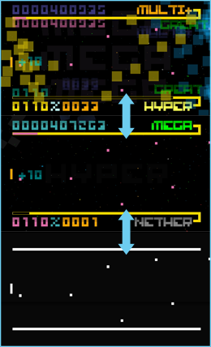

10 |
Funzionamento del gioco |
 |
MODALITÀ In BIT.TRIP BEAT le vite sono illimitate, a patto di imparare a navigare tra le tre modalità.
 I giocatori più esperti possono raggiungere i punteggi più elevati e prolungare le partite al massimo restando nella modalità più alta.
Il tuo compito consiste nel respingere i battiti per riempire l'Indicatore Mega e aumentare di modalità.
Quando sei nella modalità Mega, riempiendo l'indicatore Mega potrai aumentare il Moltiplicatore di punteggio. Se manchi i battiti, riempirai l'indicatore Minimo, con il rischio di passare alla modalità Minima, dove non si ottiene alcun punto.
Qui hai l'ultima possibilità per evitare la fine della partita. Devi salire di modalità dalla modalità Minima per tornare in gioco. Se, al contrario, scendi di modalità, la partita finisce. TRANSIZIONI Per vivere in prima persona l'intera trama di gioco e la colonna sonora, ci vogliono una grande concentrazione e mani abili.
Raccogli tutti i Battiti transizione in formazione per aggiungere un ulteriore livello alla colonna sonora e per progredire nella trama di gioco e cambiando immagine di fondo.
Se manchi un solo Battito transizione in formazione, la colonna sonora non cambia e torni all'immagine di fondo con cui hai appena giocato. |

 |
 |
 |